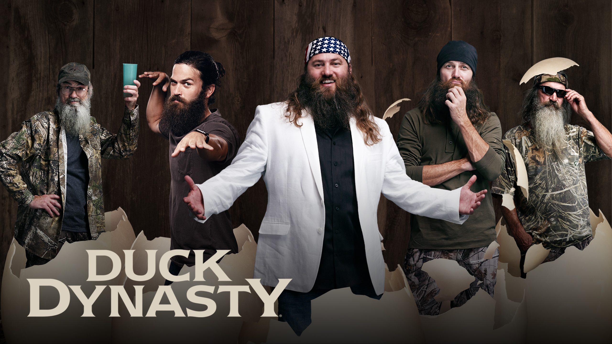

Duck Dynasty
What is it about?
Duck Dynasty was a reality television following the Robertson Clan and their lives running the family company, Duck Commander. The Robertson's are from West Monroe, Lousiana. While the family might run a business their days are filled with much more than making duck calls. Episodes feature everything from catching frogs to blowing up duck blinds. Following this wild county family is sure to bring on plenty of surprises and always show the love between a family. With every episode ending with a family prayer over dinner the show allows all viewers to be part of their family.
Lifetime of the Show
Even before the show the Robertson clan was familiar with a camera. The Roberstona began selling hunting DVD's featuring the "Duckmen". Their hunting dcd's were very popular and set their media career off on the right foot. The reality television show duck dynasty began in 2012 and began very succesfully. Among their successful launch the roberstons began to also offer merch, books, cooking DVD's, cookbooks, and specialty media such as a Christmas DVD. Reviews began to drop in 2014 after Phil spoke on his views on homosexuality but the show was able to hold on. It ran for 11 seasons ending in 2017. While the show might have ended spin offs with the boys individually have continued to arise as well as many books and podcasts.